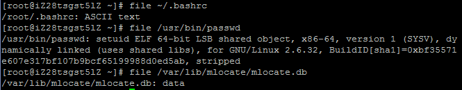
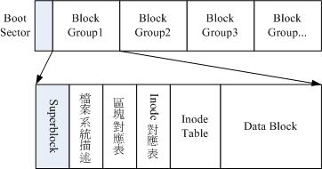
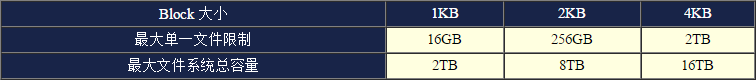

1.观察文件类型：file，比如你要打开一个文件，但是因为不知道它是二进制文件还是普通的文本文件在考虑用什么命令查看，这个时候就可以先用file查看该文件的真正格式。

经过百度之后，知道ELF一般是二进制文件或可执行文件，所以用xxd或od查看文件内容，另外data格式的文件也是二进制数据文件，因此也用xxd或od查看。
2.文件系统通常会将这两部份的数据分别存放在不同的区块，权限与属性放置到inode中，至于实际数据则放置到data block区块中。另外，还有一个超级区块(superblock)会记录整个文件系统的整体信息，包括 inode 与 block 的总量、使用量、剩余量等。每个 inode 与 block 都有编号，至于这三个数据的意义可以简略说明如下：
superblock：记录此filesystem的整体信息，包括inode/block的总量、使用量、剩余量，以及文件系统的格式与相关信息等。
inode：记录文件的属性，一个文件占用一个inode，同时记录此文件的数据所在的block号码。
block：实际记录文件的内容，若文件太大时，会占用多个block。

这种数据存取的方法称为索引式文件系统(indexed allocation)。

data block是用来放置文件内容数据地方，在Ext2中所支持的block大小有1K,2K及4K三种而已。在格式化时block的大小就固定了，且每个block都有编号，以方便inode的记录，当然，相应的大小有相应的限制。

inode记录的文件数据至少有底下这些：该文件的存取模式(read/write/excute)，该文件的拥有者与群组(owner/group)，该文件的容量，该文件创建或状态改变的时间(ctime)，最近一次的读取时间(atime)，最近修改的时间(mtime)，该文件真正内容的指向 (pointer)。
inode的特点：每个inode大小均固定为128bytes，每个文件都仅会占用一个inode，所记录的权限与用户是否符合，若符合才能够开始实际读取block的内容。

系统将inode记录block的区域定义为12个直接,一个间接,一个双间接与一个三间接记录。
Superblock是记录整个filesystem相关信息的地方，记录的信息主要有：
block与inode的总量
未使用与已使用的inode/block数量
block与inode的大小
filesystem的挂载时间、最近一次写入数据的时间、最近一次检验磁盘 (fsck) 的时间等文件系统的相关信息
valid bit数值，若此文件系统已被挂载，则valid bit为0，若未被挂载，则valid bit为1
Filesystem Description (文件系统描述说明)，这个区段可以描述每个block group的开始与结束的block号码，以及说明每个区段(superblock,bitmap,inodemap,data block)分别介于哪一个block号码之间。
block bitmap (区块对照表)，从block bitmap当中可以知道block哪些已经被使用，哪些还没被使用。
inode bitmap(inode 对照表)，与block bitmap类似，但inode bitmap是记录使用与未使用的inode号码。
那么从目录树看，假如要读取/etc/passwd这个文件：
1./ 的 inode：找到 / 的 inode，且 inode 规范的权限让我们可以读取该 block 的内容(有 r 与 x)。
2./ 的 block：经过上个步骤取得 block 的号码，并找到该内容有 etc/ 目录的 inode 号码。
3.etc/ 的 inode：读取etc/的 inode 得知当前用户具有 r 与 x 的权限，因此可以读取 etc/ 的 block 内容。
4.etc/ 的 block：经过上个步骤取得 block 号码，并找到该内容有 passwd 文件的 inode 号码。
5.passwd 的 inode：读取 passwd 的inode 得知当前用户具有 r 的权限，因此可以读取 passwd 的 block 内容。
6.passwd 的 block：最后将该 block 内容的数据读出来。